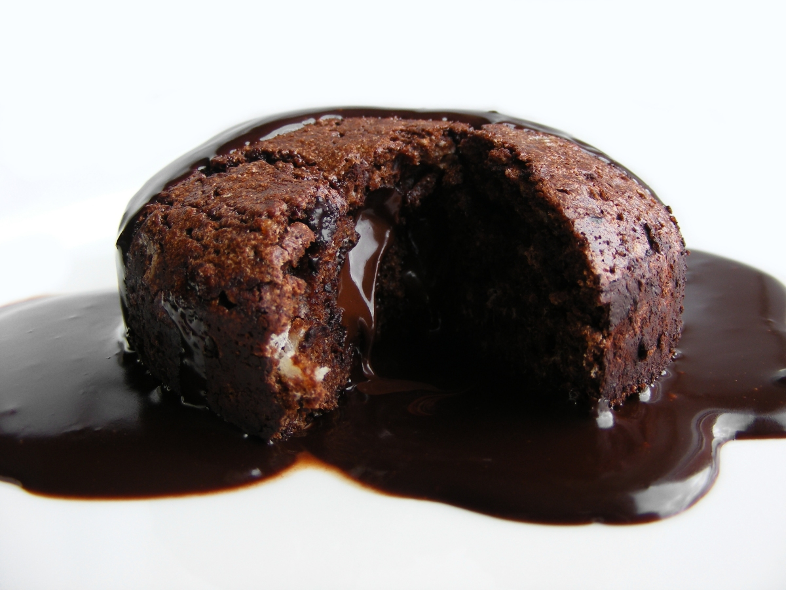

Brownies
This is my favorite recipe
List of ingredients
- Sugar
- Chocolate
- Butter
- Flour
- Eggs
Procedure
- Melt the chocolate and butter
- Mix in the sugar
- Mix in the eggs and vanilla
- Mix in the flour and coca powder
- Bake
Chocolate Bread Pudding
This recipe is for chocolate lovers
List of Ingredients
- Loaf challah bread
- Whole milk
- Chopped Chocolate
- Butter
- Granulated Sugar
- Eggs
- Vanilla Extract
Procedure
- Slice bread into 1" cubes
- In a medium saucepan, combine milk,chocolate and butter
- Place over medium-low heat stirring occasionally
- In a large bowl, whisk to combine sugar,eggs, egg yolks, vanilla and salt
- Whisk in milk mixture and cream
- Transfer bread, chocolate custard mixture and chocolate chips to a baking dish
- let mixture sit for 10 minutes to allow bread soak up the custard
- Bake untill pudding is set
- Let cool for 35 minutes before topping with hot fudge, raspberries, and serving with ice cream
Molten Chocolate Cake
The best dessert recipe
List of ingredients
- Cocoa Powder
- Semisweet chocolate chips
- Granulated Sugar
- Large eggs
- Espresso Powder
- Kosher salt
Procedure
- Preheat oven to 400°.Generously butter 12 cups of a standard muffin tin
- Dust with cocoa powder and tap out excess
- In a large bowl,cream butter and granulated sugar until fluffy with a hand mixer
- Add eggs one at a time, beating well after each addition
- Add vanilla and gradually beat in flour, espresso, and salt until just combined
- Stir in melted chocolate untill evenly incorprated
- Divide batter evenly among prepared muffin cups
- Bake just untill tops of cakes no longer jiggle
- Place a large baking sheet on top of the muffin tin.Hold both pans together and flip them to invert cakes onto to thr baking sheet
- Quickly transfer to serving plates
- Dust with powdered sugar and serve
Maple Bourdon Chicken And Waffle Sandwich
My favorite breakfast recipe

List of Ingredients
- Baking Soda
- Large Eggs
- All pupose flour
- Milk
- Chicken cutlers
- Honey
Procedure
- Make the waffles.Whisk egg whites to soft peaks and set aside
- Whisk all other waffle ingredients together and fold in egg whites
- Cook until crispy and deeply golden
- Fry the chicken
- Make the syrup:In a small saucepan, add bourbon and maple syrup.Heat on medium high heat to bum off alcohol and reduce liquid
- Remove from heat and whisk in butter
- Let cool to room temperature or slightly warm before serving
- Assemble the sandwiches
Salsa Verde Baked Eggs
List of ingredients
- Large eggs
- Salsa verde
- tortilla chips
- Cheddar
Procedure
- Preheat oven to 400°
- pour salsa into a small oven proof dish
- Make 2 wells in sauce, then crack an egg into each well
- Sprinkle both cheese all over and bake untill egg whites are just set and cheese is melted
- Garnish with cilantro, lime juice, hot sauce
- Serve warm with tortilla chips